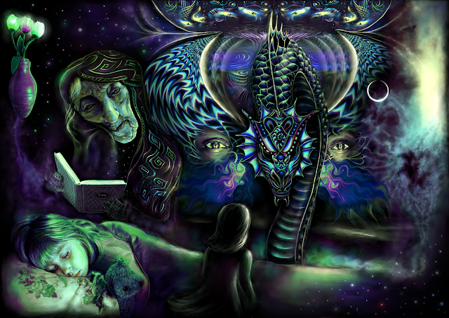
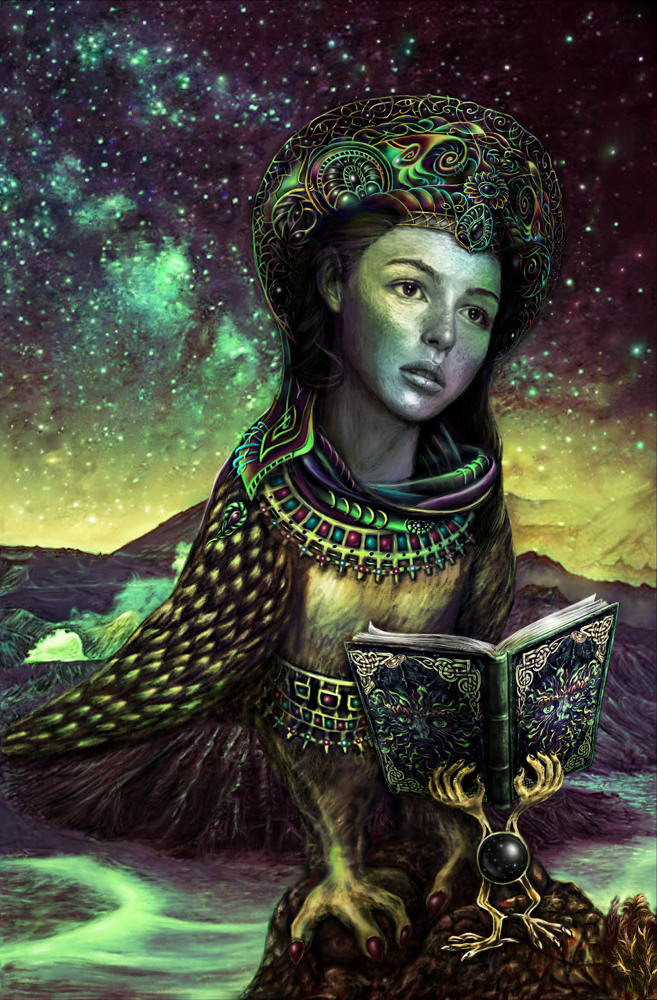
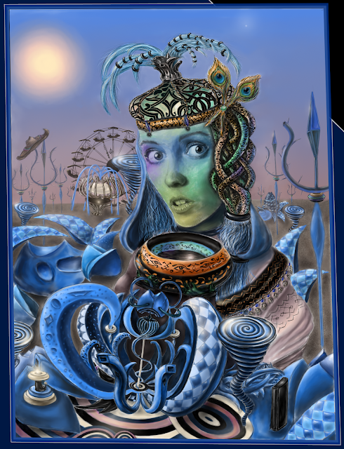
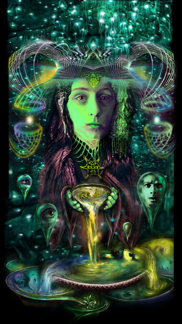
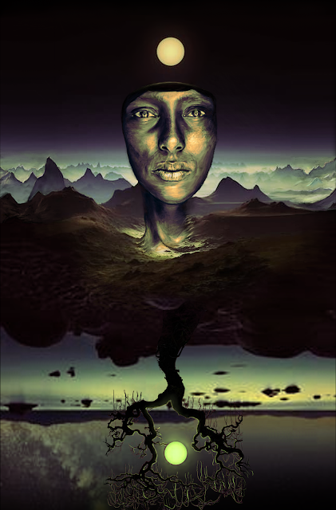
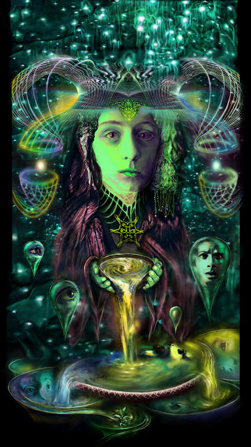
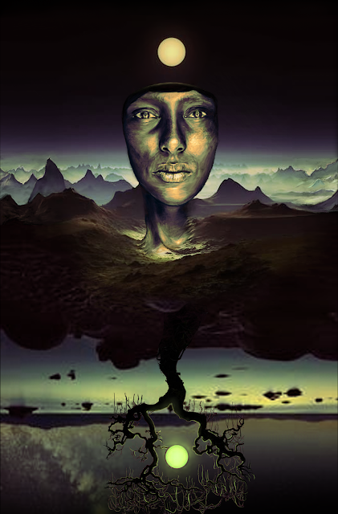

20 Смотрящий, преследующий меня в разных снах

Давным-давно мне приснился этот сон… Ощущения от него я попыталась передать на этом рисунке.
Снилось мне как мы с папой гуляем по большому роскошному полю. Светит солнце в ярком летнем небе, в воздухе ароматы луговых трав и безмятежность. Но внезапно что-то изменилось. Небо затянулось тучами, земля перед нами разверзлась и из земли показался гигантский дракон. И в тот момент, впервые в жизни, я поняла, что никто меня не защитит. Что мне, маленькой, придется встретится с ним один на один. Я зажмурилась и закричала, но продолжала видеть его сквозь закрытые веки. А дракон замер и глядел на меня странным, нечеловеческим взглядом, которого я никогда ни у кого из живых не видела. В этом взгляде присутствовало нечто жуткое, но не агрессивное, нет.. скорее чужое, нечеловеческое, но при этом давным-давно знакомое, вечно, смотрящее сквозь тебя, видящее тебя насквозь и в то же время не замечающее. Видевшее все на свете, мудрое, древнее, все понимающее, бесстрастное... бездна. Смотришь в эти глаза и не можешь оторваться.
Шло время, я иногда видела этот взгляд... много раз во сне и никогда наяву.
Странно, но когда я спустя годы поговорила об этом с папой, он тоже сказал, что в тот день ощутил нечто напоминающее дракона, правда не во сне, а наяву. Я же отчетливо помню, что это был именно сон, помню, как я проснулась среди ночи от страха. Странно, что спустя годы папа смог вспомнить этот день. Странно, что после этого случая "смотрящий" начал появляться мне в разных снах в разных обличиях.
Спустя несколько дней мне приснился сон, где моя кукла Саша сама поднялась и села на диване напротив меня и долго глядела на меня все тем же взглядом, что глядел дракон. Я проснулась в ужасе.
Потом в моих снах часто появлялись существа, глядящие на меня этим взглядом. Я пряталась от них, они меня находили, но ничего мне не делали, только глядели (в каждом из этих снов такое существо было только одно, но из сна в сон это были разные существа, как правило - люди. Чаще - женщины. Не помню мужчин.).
Каждый раз я от него убегала. Потом, повзрослев, когда мне исполнилось 18 лет, я увидела во сне это существо. Было очень страшно, но я заставила себя не убежать, а подойти к нему. По мере того, как я подходила, существо казалось все менее страшным. Страх уходил. Когда я к нему подошла, мы взялись за руки. Существо сказало мне - "мы другие". И мы куда-то отправились вместе. После этого я много лет его не видела.
Не так давно я увидела его вновь. Это был странный сон. Спустя годы я увидела его в образе моей второй бабушки. Я сразу вспомнила этот взгляд. И вела себя эта бабушка из сна совсем не так, как на самом деле. От нее шел все тот же потусторонний холод, что и раньше от этого существа. Тогда она усмехнулась и сказала что-то вроде: "не ждали?". Во сне я решила, что это относится к действию сна. Но потом подумала, что это может относиться непосредственно ко мне. Моя первая реакция была инстинктивная - проснуться/сбежать из сна, что я и проделала раньше, чем успела все обдумать. Однако, сон меня не отпустил. Даже после того, как я проснулась в реальности (я точно уверена, что я проснулась), сон каким-то образом затянул меня назад, и я снова увиделась с глазу на глаз с этим существом. Но теперь я решила не убегать, а попросить его рассказать мне, что оно такое. Но ткань сна во второй раз оказалась довольно зыбкой..
Это был первый раз, когда сон затянул меня назад после пробуждения.
Помню другой раз, когда сон не только затянул меня обратно, но и наступил сонный паралич:
Я вошла в осознанный сон с целью связаться в нём с моим хорошим знакомым и увидеть картину, которую он мне желал показать. На этой картине должен был находиться меч. Но во сне меня отвлек какой-то мужчина, который проявлял ко мне интерес и пытался удержать, беседовал со мной об осознанных сновидениях, пытался напоить меня чаем. Я хотела от него отделаться, но он был очень навязчив. Я даже подумала - а не является ли он вампиром, о которых многие поговаривают? Может, таким образом, существо снов хочет украсть мою энергию? Внезапно возникла маленькая девочка с большими часами и показала мне на циферблат: "твоё время во сне скоро закончится". Тогда я оттолкнула мужчину и телепортировалась в другое место. Начала пытаться материализовывать разные картины. Я увидела несколько удивительных картин. Как же я хотела их нарисовать тогда! Но ни одной картины с мечом. Внезапно навязчивый тип снова появился. Мне пришло в голову сжечь его в огне или даже съесть, чтоб не путался под ногами. Но он не был обычным существом сна, при этом, ловко удерживал сцену. Я решила проснуться, и мне это почти удалось, как сон затянул меня обратно. И снова - он! Я вновь попыталась вырваться. На этот раз я проснулась в моей комнате. Лежу. Все вижу. Не могу двинуться, даже шевельнуть пальцем. Состояние жуткое. Хорошо, я до этого читала про сонный паралич. Сразу сообразила - это оно. При этом было отчетливое чувство, что тот самый навязчивый тип вылез вместе со мной из моего сна и не отпускает. Я говорю про себя:
- Здесь кроме меня никого не существует. Я просто еще не проснулась, скоро это пройдет... А ты, гад такой, лишь плод моего воображения. У меня сложилось ощущение, что в этот момент у него было выражение лица как у Воланда на Патриарших: "Он едва самого меня не свел с ума, доказывая мне, что меня нету!". После этого я услышала резкий душераздирающий звук, словно лопнул какой-то гигантский пузырь, после чего я проснулась окончательно.
На этих рисунках я как могла старалась передать взгляд смотрящего. Но передать внутреннее ощущение от него оказалось нетривиальной задачей.

 
